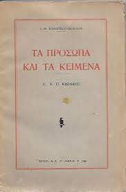

Ο Κωνσταντίνος Καβάφης γεννήθηκε στις 29 Απριλίου 1863 στην Αλεξάνδρεια, όπου οι γονείς του εγκαταστάθηκαν εγκαταλείποντας την Κωνσταντινούπολη το 1850. Ήταν το ένατο παιδί του Πέτρου - Ιωάννη Καβάφη (1814-1870), μεγαλέμπορου βαμβακιού και της Χαρίκλειας Φωτιάδη, που ανήκε σε παλιά φαναριώτικη οικογένεια μεγαλεμπόρων και κοινοτικών επιτρόπων της Κωνσταντινούπολης.Και τα δυο αυτά στοιχεία, η εμπορική ιδιότητα του πατέρα και η αρχοντιά της μητέρας συντέλεσαν σημαντικά στη διαμόρφωση του χαρακτήρα του ποιητή.
Η οικογένεια Καβάφη νοικιάζει μεγάλη οικία που ανήκει στον Στέφανο Ζηζίνια κοντά στον Ανατολικό Λιμένα και πάνω στην Πλατεία των Προξένων, κατοπινή Μωχάμετ Άλη.Ο Πέτρος Καβάφης εισάγει υφάσματα από το Μάντσεστερ ενώ ίσως έκανε εξαγωγή σιτηρών, βάμβακος, και ακατέργαστων βουβαλοδερμάτων. Στη Μίνια της Άνω Αιγύπτου ιδρύει κλάδο της επιχείρησής του όπου αξιοποιεί τα σιτηρά της περιοχής.Ο Κ. Καβάφης επίσης, εργάστηκε για 30 χρόνια στην εταιρία αρδεύσεων της Αιγύπτου. Κατά την παραμονή στην Αίγυπτο η οικογένεια αποκτά και άλλα παιδιά. Το 1851 γεννιέται ο δεύτερος γιος ο Πέτρος Ιωάννης, το 1853 ο Αριστείδης, το 1855 η Ελένη, η μόνη κόρη της οικογένειας, η οποία πεθαίνει οκτώ μηνών. Ακολουθούν ο Αλέξανδρος, ο Παύλος που πεθαίνει έντεκα μηνών, στα 1860 άλλο αγόρι το οποίο επίσης θα ονομάσουν Παύλο, στα 1861 ο Τζων, και στα 1863 ο Κωνσταντίνος.Στα 1860 μετακομίζουν στην οδό Σερίφ στον αριστοκρατικό δρόμο των βαμβακάδων.Το βιωτικό επίπεδο της οικογένειας είναι υψηλό τα έπιπλά του, τ' αμάξια, τ' ασημικά, τα υαλικά ήσαν με λούσο σπάνιο τότε μεταξύ των Γραικών».Για τον Τσίρκα ο εμπορικός οίκος Καβάφη μεταξύ 1864 και 1870 ήταν μέσα στους τέσσερις-πέντε πρώτους σε κύκλο εργασιών.Το 1869 ο Πέτρος Καβάφης παρασημοφορείται με το Μετζιδιέ 3ης Τάξεως για τη συμβολή στην ανάπτυξη του εμπορίου και της βιομηχανίας.Στις 10 Αυγούστου 1870 πεθαίνει ο πατέρας του ποιητή σε ηλικία πενήντα έξι ετών. Στην Αλεξάνδρεια ο Καβάφης διδάχτηκε αγγλικά, γαλλικά και ελληνικά με οικοδιδάσκαλο και συμπλήρωσε τη μόρφωσή του για ένα-δύο χρόνια στο Ελληνικό Εκπαιδευτήριο της Αλεξάνδρειας.
Μετά το θάνατο του πατέρα του και τη σταδιακή διάλυση της οικογενειακής επιχείρησης, η οικογένεια εγκαταστάθηκε στην Αγγλία (Λίβερπουλ και Λονδίνο) όπου έμεινε μέχρι το 1876. Πριν εγκαταλείψουν την Αίγυπτο μεταφέρουν την κινητή περιουσία τους σε ένα διαμέρισμα της οδού Ραμλίου με προσιτότερο ενοίκιο.Το 1877 γίνεται η οριστική εκκαθάριση της εταιρείας. Κατά την διαμονή του εκεί, δεν γνωρίζουμε αν φοίτησε σε κάποιο σχολείο ή αν έλαβε τη μόρφωσή του με ιδιαίτερα μαθήματα.
Το 1897 ταξίδεψε στο Παρίσι και το 1903 στην Αθήνα, χωρίς από τότε να μετακινηθεί από την Αλεξάνδρεια για τριάντα ολόκληρα χρόνια. Ο Καβάφης αρχίζει να εργάζεται, όχι ακόμη συστηματικά, αλλάζοντας διάφορα επαγγέλματα, όπως του δημοσιογράφου στην εφημερίδα Τηλέγραφος (1886), του μεσίτη στο Χρηματιστήριο Βάμβακος (1888) και του άμισθου γραμματέα στο Γραφείο Αρδεύσεων (1889-1892) όπου και θα προσληφθεί ως έκτακτος έμμισθος υπάλληλος το 1892 και θα εργαστεί μόνιμα εκεί επί τριάντα χρόνια, μέχρι το 1922, φτάνοντας στο βαθμό του υποτμηματάρχη.
